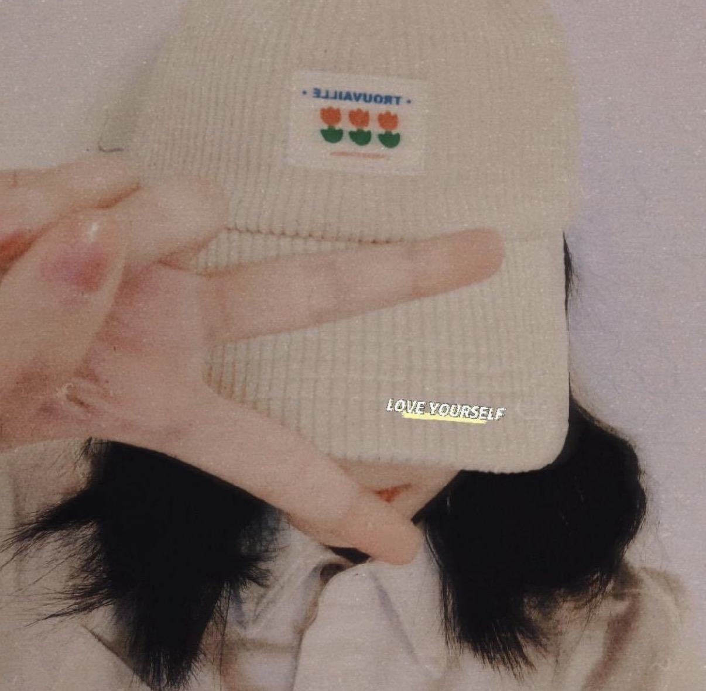
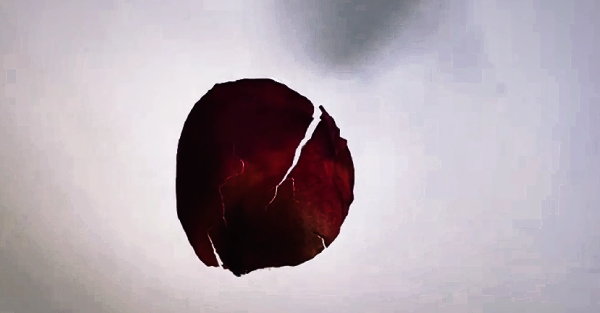
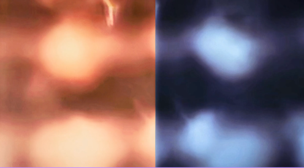
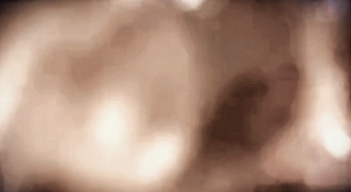
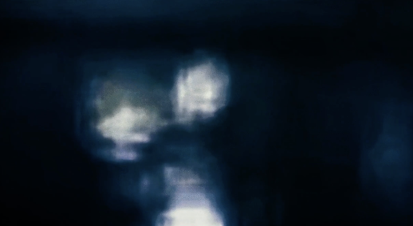
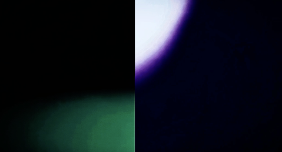
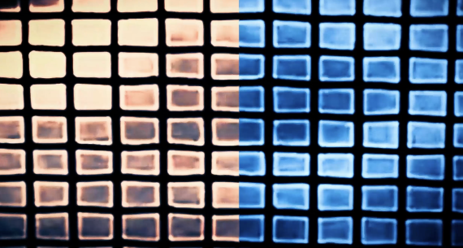
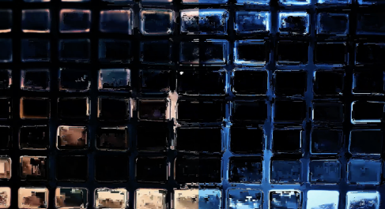

JINGYI WANG
( SHE/HER )
Portfolio: LINK
About the Artist
Jingyi Wang is a digital media artist who is currently completing her BFA in Digital Media Art at San José State University. She practices and explores the intersection of emotion, memory, and natural elements through light, shadow, and time-based media. Working across video installation, web-based media, and photography, she creates sensory environments that reflect moments of transition and emotional ambiguity.
Equinox
Equinox is a video installation that explores ideas of balance and transition. The work reflects on in-between states, moments of uncertainty, loneliness, and emotional change that often occur during periods of personal or cultural transition. The projection is divided into two visual halves that gradually shift and merge over time, suggesting a process of movement toward equilibrium. This visual structure reflects the experience of navigating between different emotional states or cultural environments.






